Visualization Gallery
Introduction
This post will present a gallery of some of visualization examples from this blog; you can click the the graphic, or the
link at the start of each section
to go to the blog post. The gallery will be updated periodically.
Introduction to GeoPandas
Introduction to GeoPandas
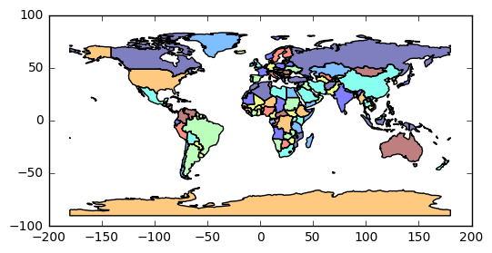
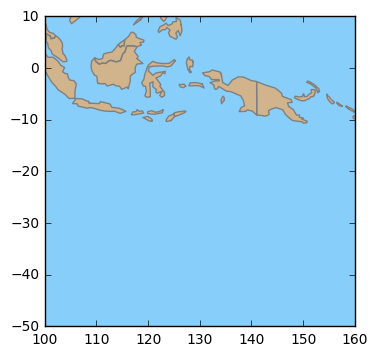
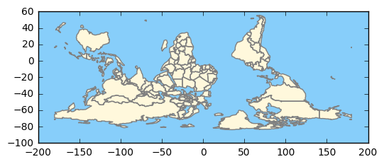
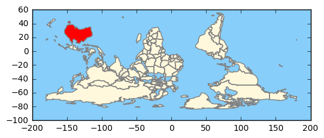
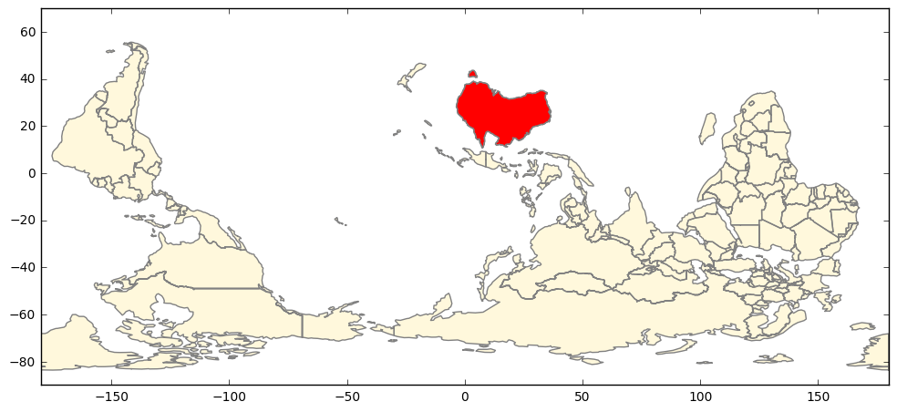
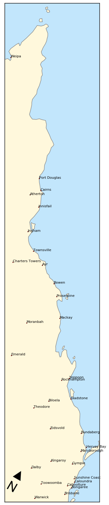
Cartopy and MultiLine Geometries
Cartopy and MultiLine Geometries
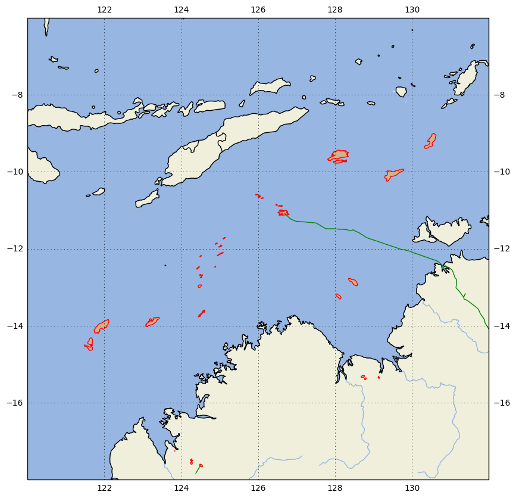
Cartopy and Satellite Imaging
Cartopy and Satellite Imaging
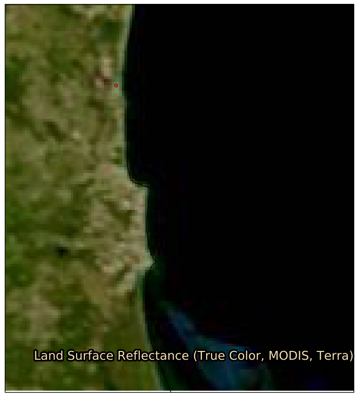
Cartopy and Map Layout
Cartopy and Map Layout
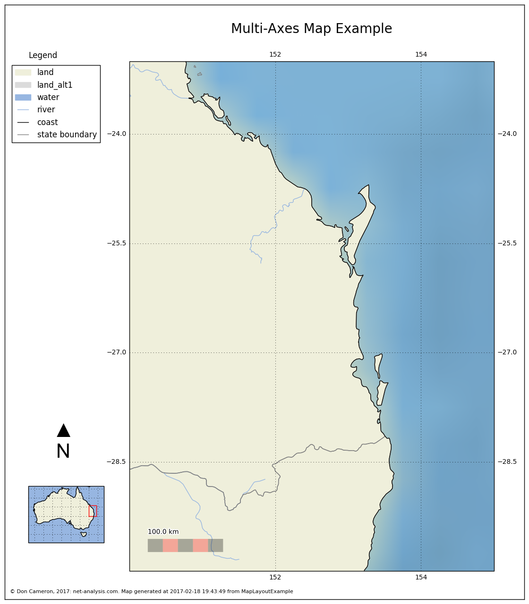
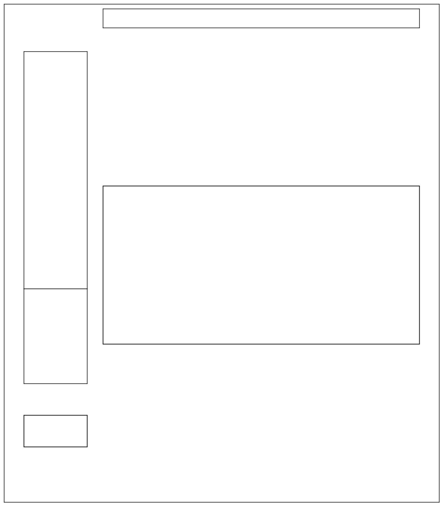
More Cartopy Tiles
More Cartopy Tiles
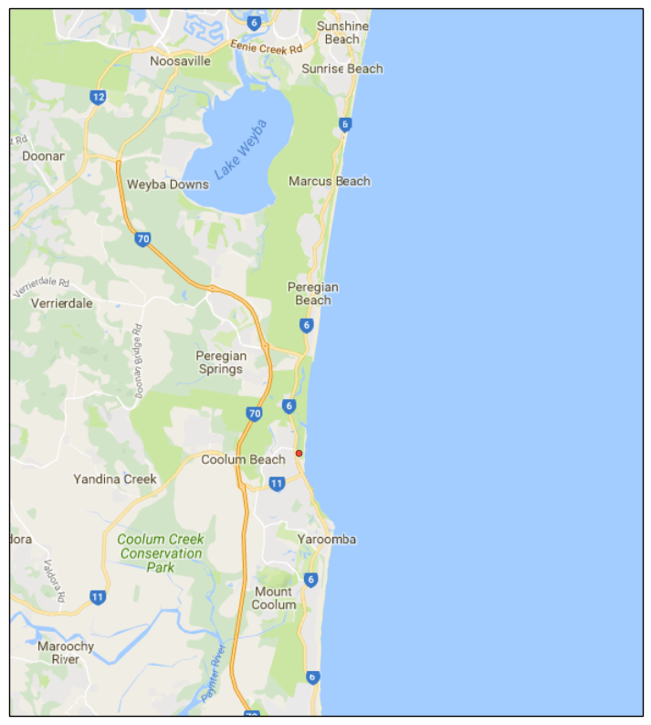
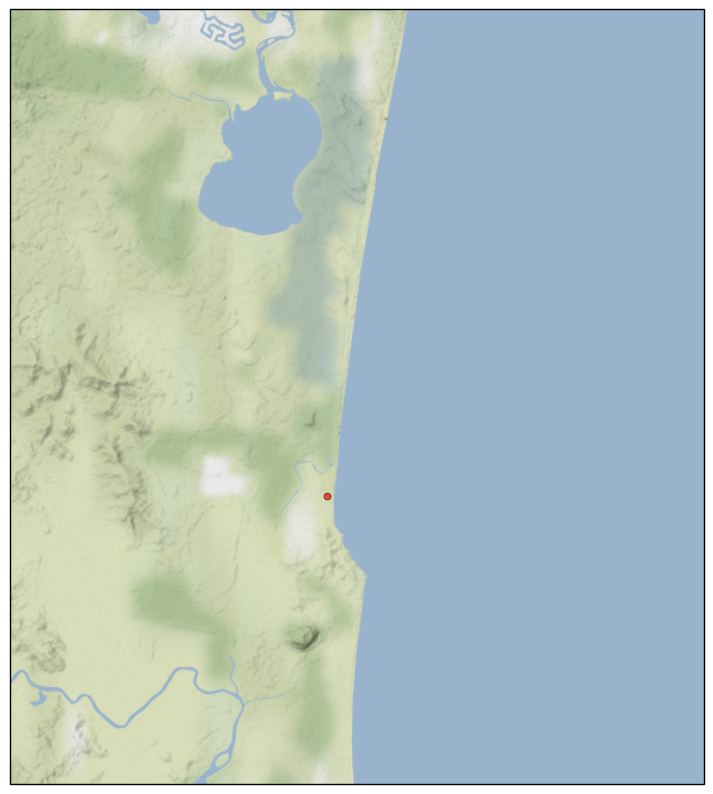
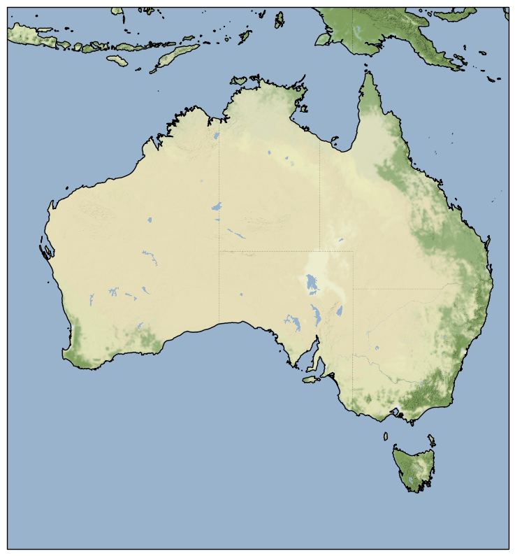
Introduction to Cartopy
Introduction to Cartopy
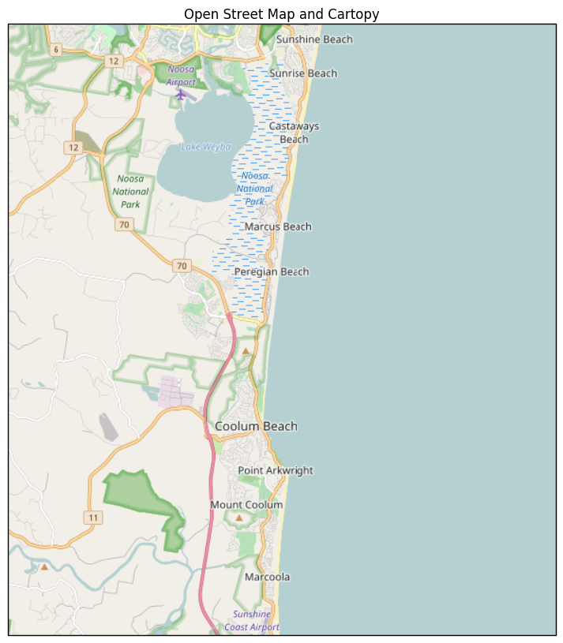
Global Choropleth in Basemap
Global Choropleth in Basemap
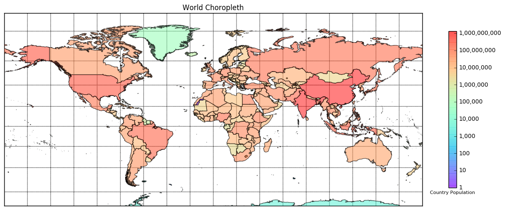
The end
Comment